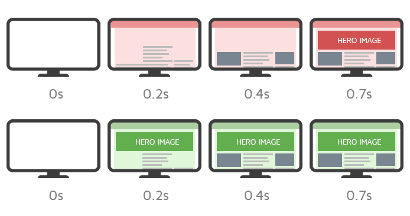
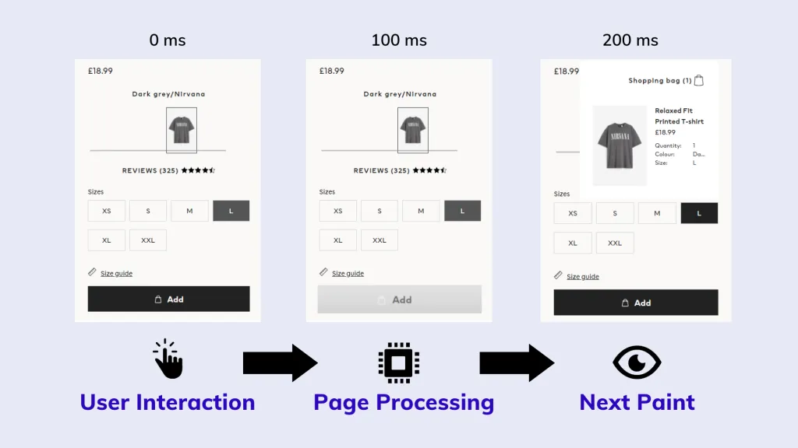
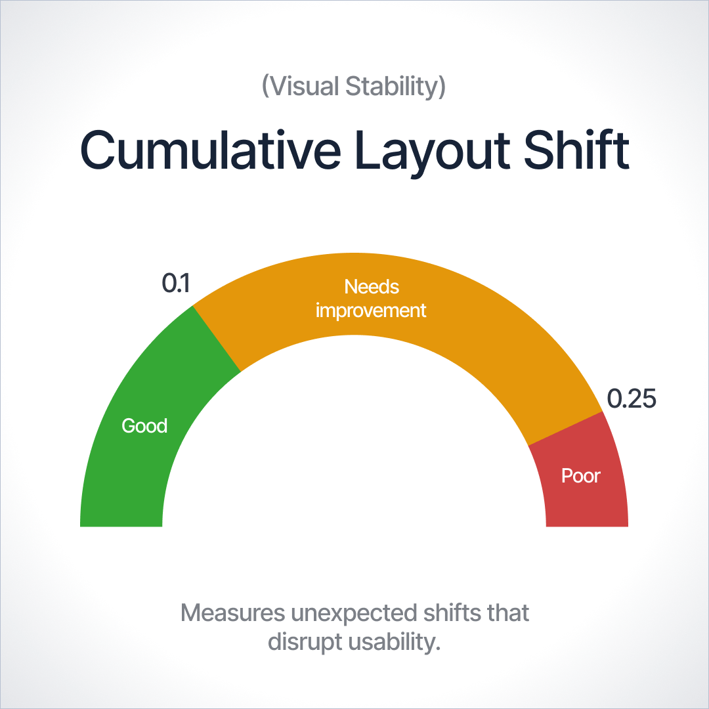

La velocidad de tu web no es un lujo, es el pilar fundamental de la experiencia de usuario y el SEO.
Ver Métricas ClaveEl rendimiento web impacta directamente en el comportamiento de tus usuarios y en cómo te ve Google.
Cuando un usuario visita tu sitio, cada segundo de retraso disminuye la satisfacción del cliente y destruye tus métricas de conversión. Un sitio web optimizado no solo retiene tráfico, sino que reduce los costos de infraestructura y mejora el rendimiento en dispositivos móviles con conexiones lentas.
Un sitio rápido retiene más usuarios. Si una página tarda más de 3 segundos en cargar, la probabilidad de rebote aumenta drásticamente.
Google utiliza la velocidad de carga como un factor de clasificación directo tanto en búsquedas de escritorio como móviles.
Cada milisegundo cuenta. Las webs más rápidas registran tasas de conversión e ingresos por sesión considerablemente mayores.
Las tres métricas esenciales que Google evalúa para medir la salud del rendimiento de tu sitio:
Mide el tiempo que tarda en renderizarse el elemento de contenido más grande visible en la pantalla. Lo ideal es que ocurra dentro de los primeros 2.5 segundos.

Evalúa la capacidad de respuesta general de la página a las interacciones del usuario (como clics o pulsaciones). Un buen resultado es inferior a 200 milisegundos.

Mide los cambios de diseño inesperados que ocurren durante la vida útil de la página. Debe mantenerse por debajo de un valor de 0.1.

¿Cómo mejorar tus puntuaciones y acelerar tu sitio web? Sigue estas buenas prácticas:
Las imágenes pesadas son la causa número uno de un LCP deficiente.
Reducir el tamaño de los archivos ayuda a que el navegador procese el sitio mucho más rápido.
La velocidad de respuesta inicial depende directamente de dónde esté alojada tu web.